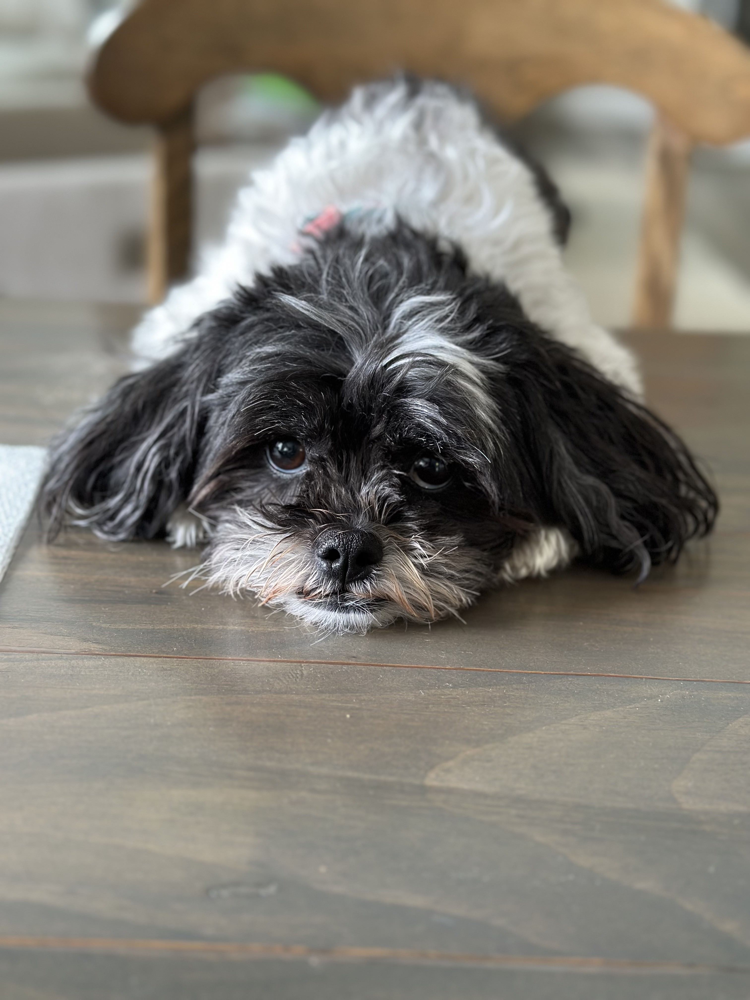
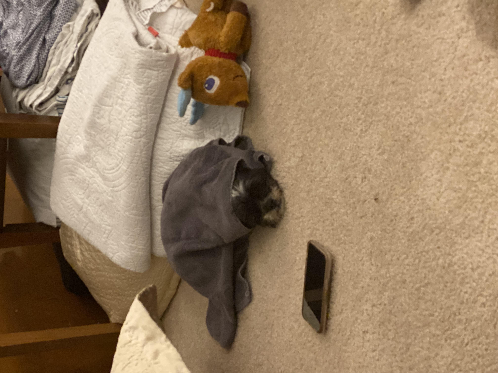
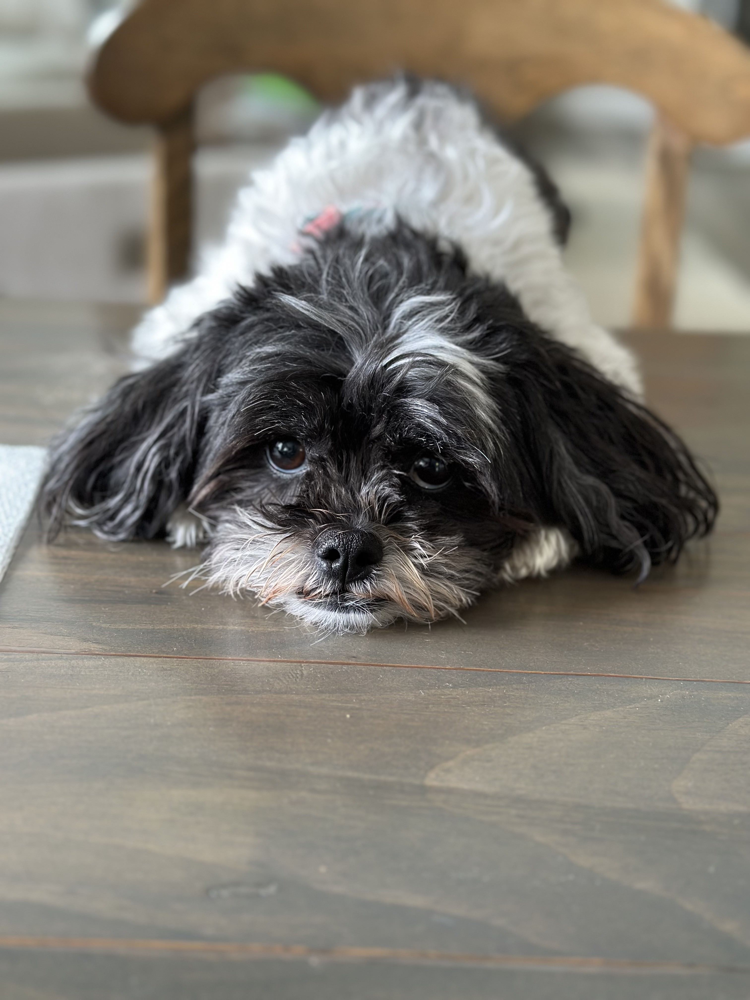
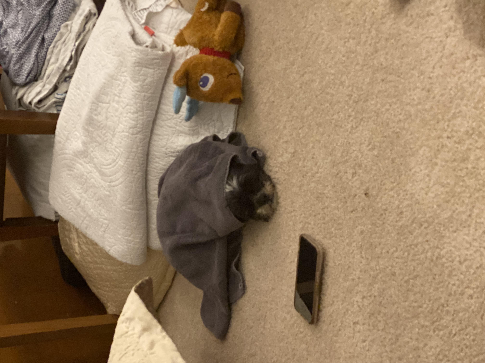

Rosie

Brown and White Bichon/Shih Tzu mix
Rosie is a small but super energetic dog. Whenever someone comes to the house, she is very quick to run up and greet them. She loves to play fetch and will not leave you alone with her toys as she begs you to play with her.
Rosie is also a wonderful lap dog. If you sit on the couch, she is quick to find a spot next to you. If you wear a blanket over your legs, you'll find her laying on your legs. She loves to cuddle and loves to be pet, so she will always be right up on you.
Photo Gallery

 



{kind=link}
{kind=link}
Likes
Treats, Fetch, Cuddles
Terry

Terry is a playful and spirited dachshund that loves to play fetch with his bone or tennis ball. He loves wandering in forests and finding large sticks to take home. His favorite foods are kibble and peanut butter. Terry will run around frantically when it’s time to eat at home.
My family found Terry at a shelter and decided to adopt it. He was 4 months old and is now 8 years old. Terry knows how to swim, but we don’t tend to go often. Terry got poison ivy once; however, he quickly recovered and has been doing great since.
Photo Gallery


Likes
Fetch, Eating, Belly Rubs